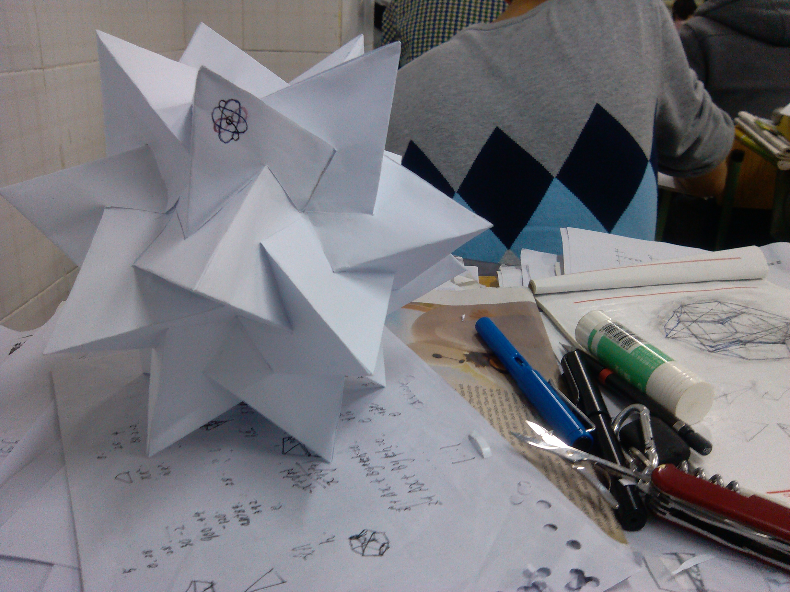
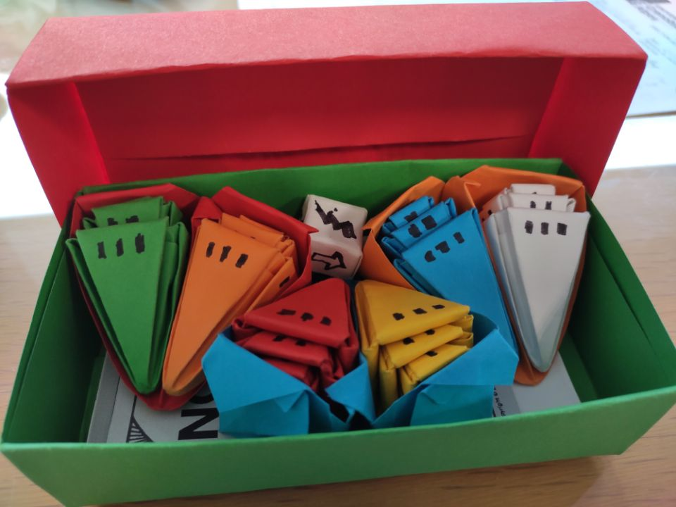
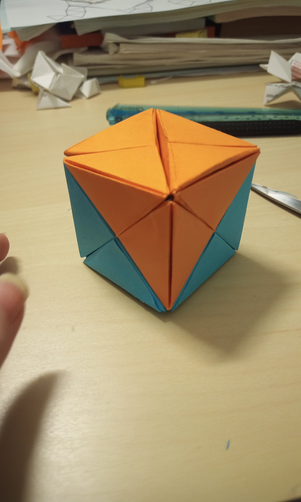
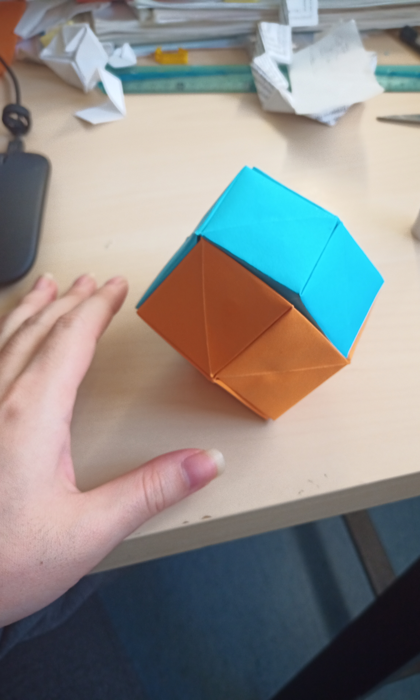
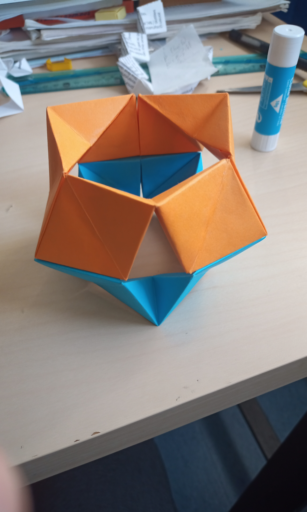
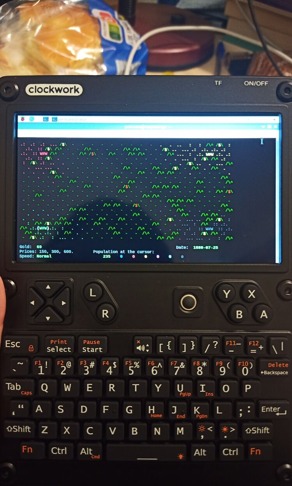

Personal Interests
Origami
I like to play with paper, like origami, paper models. Cutting, gluing, folding... are the same ways we create geometric shapes, manually or abstractly.
 (This is a work I made in high school, Compound of five tetrahedra)
 (Recent work of origami Looney Pyramids)
   (Origami Yoshimoto Cube No. 2)
Game Development
I am also interested in indie game development. Here is my itch profile. I would like to apply some math thought into game design.
Programming
As a mathematician, I prefer Functional programming language. Here is my github.
I am interested in type theory and linear logic. And I believe computer verifying proof would be the future of math. Recommend to look at Lean or natural number game
 (And my lovely uConsole)